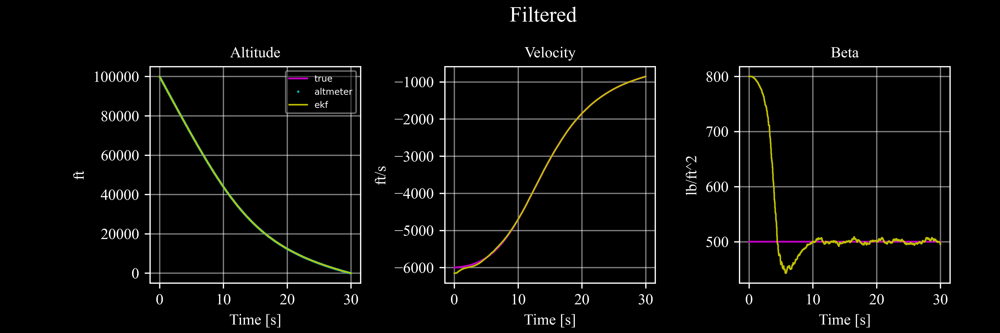

To download this notebook, click the download icon in the toolbar above and select the .ipynb format.
Ballistic Coefficient Estimation with Extended Kalman Filter#
The following example appears in several sources. [ZP]_ provides a great deal of detail. Additional sources can be found in [SD]_.
The problem is to estimate the ballistic coefficient of a target in a free fall where a noisy radar is tracking it.
The mathematical background required for understanding the Extended Kalman Filter and the form of implementation using c4dynamics is found in the introduction page to the filters module documentary.
The ekf class of c4dynamics is found here.
The program utilizes the following components of c4dynamics:
Object |
Module |
Description |
|---|---|---|
target |
The target is a state object of three variables (altitude, vertical velocity, ballistic coefficient) |
|
radar |
Range detector |
|
ekf |
Extended Kalman filter with three variables state (altitude, vertical velocity, ballistic coefficient) |
|
g_fts2 |
Gravity constant in foot per seconds squared |
|
plotdefaults |
Setting default properties on a matplotlib axis |
The process equations are:
\[\dot{z} = v_z\]
\[\dot{v}_z = {\rho_0 \cdot e^{-z / k} \cdot v_z^2 \cdot g \over 2 \cdot \beta} - g\]
\[\dot{\beta} = \omega_{\beta}\]
With output measure:
Where: - \(z\) is the target altitude (\(ft\)) - \(v_z\) is the target vertical velocity (\(ft/s\)) - \(\beta\) is the target ballistic coefficient (\(lb/ft^2\)) - \(y\) is the system measure - \(\rho_{0} = 0.0034\) - \(k = 22,000\) - \(g = 32.2 ft/s^2\) - \(\omega_{\beta} \sim (0, 300)\) - \(\nu_k \sim (0, 500)\)
Let:
The lineariztion of the process matrix for the predict step:
The measurement is a direct sample of the altitude of the target so these equations are already a linear function of the state and represented by the matrix H:
We now have all we need to run the extended Kalman filter.
[7]:
import sys
sys.path.append(f'..\..\..')
import c4dynamics as c4d
import numpy as np
from scipy.integrate import odeint
Quick setup for an ideal case:
[4]:
dt, tf = .01, 30
tspan = np.arange(dt, tf, dt)
dtsensor = 0.05
rho0, k = 0.0034, 22000
tgt = c4d.state(z = 100000, vz = -6000, beta = 500)
altmtr = c4d.sensors.radar(isideal = True, dt = dt)
Target equations of motion:
[5]:
def ballistics(y, t):
return [y[1], rho0 * np.exp(-y[0] / k) * y[1]**2 * c4d.g_fts2 / 2 / y[2] - c4d.g_fts2, 0]
Main loop:
[8]:
for t in tspan:
tgt.store(t)
tgt.X = odeint(ballistics, tgt.X, [t, t + dt])[-1]
_, _, z = altmtr.measure(tgt, t = t, store = True)
Let’s write a plotting function that serves us to draw the results at each run of the filter.
The parameters of the function drawekf enable to control the elements of the components to draw: - ekf: estimated object - trueobj: ground truth reference to the estimation - measure: the raw samples of the sensor - std: the square root of the covariance matrix P, representing one standard deviation of the estimation error
[15]:
from matplotlib import pyplot as plt
plt.style.use('dark_background')
def drawekf(ekf = None, trueobj = None, measures = None, std = False, title = '', filename = None):
textsize = 10
fig, ax = plt.subplots(1, 3, dpi = 200, figsize = (9, 3)
, gridspec_kw = {'left': .15, 'right': .95
, 'top': .80, 'bottom': .15
, 'hspace': 0.5, 'wspace': 0.4})
fig.suptitle(' ' + title, fontsize = 14, fontname = 'Times New Roman')
plt.subplots_adjust(top = 0.95)
''' altitude '''
if trueobj:
ax[0].plot(*trueobj.data('z'), 'm', linewidth = 1.2, label = 'true')
if measures:
ax[0].plot(*measures.data('range'), '.c', markersize = 1, label = 'altmeter')
if ekf:
ax[0].plot(*ekf.data('z'), linewidth = 1, color = 'y', label = 'ekf')
if std:
x = ekf.data('z')[1]
t_sig, x_sig = ekf.data('P00')
# ±std
ax[0].plot(t_sig, x + np.sqrt(x_sig.squeeze()), linewidth = 1, color = 'w', label = 'std') # np.array(v.color) / 255)
ax[0].plot(t_sig, x - np.sqrt(x_sig.squeeze()), linewidth = 1, color = 'w') # np.array(v.color) / 255)
c4d.plotdefaults(ax[0], 'Altitude', 'Time [s]', 'ft', textsize)
ax[0].legend(fontsize = 'xx-small', facecolor = None, framealpha = .5)
''' velocity '''
if trueobj:
ax[1].plot(*trueobj.data('vz'), 'm', linewidth = 1.2, label = 'true')
if ekf:
ax[1].plot(*ekf.data('vz'), linewidth = 1, color = 'y', label = 'ekf')
if std:
x = ekf.data('vz')[1]
t_sig, x_sig = ekf.data('P11')
# ±std
ax[1].plot(t_sig, (x + np.sqrt(x_sig.squeeze())), linewidth = 1, color = 'w', label = 'std') # np.array(v.color) / 255)
ax[1].plot(t_sig, (x - np.sqrt(x_sig.squeeze())), linewidth = 1, color = 'w') # np.array(v.color) / 255)
c4d.plotdefaults(ax[1], 'Velocity', 'Time [s]', 'ft/s', textsize)
''' ballistic coefficient '''
if trueobj:
ax[2].plot(*trueobj.data('beta'), 'm', linewidth = 1.2, label = 'true') # label = r'$\gamma$') #'\\gamma') #
if ekf:
ax[2].plot(*ekf.data('beta'), linewidth = 1, color = 'y', label = 'ekf')
if std:
x = ekf.data('beta')[1]
t_sig, x_sig = ekf.data('P22')
# ±std
ax[2].plot(t_sig, (x + np.sqrt(x_sig.squeeze())), linewidth = 1, color = 'w', label = 'std') # np.array(v.color) / 255)
ax[2].plot(t_sig, (x - np.sqrt(x_sig.squeeze())), linewidth = 1, color = 'w') # np.array(v.color) / 255)
c4d.plotdefaults(ax[2], 'Beta', 'Time [s]', 'lb/ft^2', textsize)
[16]:
drawekf(trueobj = tgt, measures = altmtr, title = 'Ideal', filename = 'bal_ideal')
These figures show the time histories of the altitude, velocity, and ballistic coefficient, for a target in a free fall with ideal conditions.
ekf capability to estimate \(\beta\) at the presence of errors.Q, R as for the initialization of the state covariance matrix P:[17]:
zerr, vzerr, betaerr = 25, -150, 1000
nu = np.sqrt(500)
p0 = np.diag([nu**2, vzerr**2, betaerr**2])
R = nu**2 / dt
Q = np.diag([0, 0, betaerr**2 / tf * dt])
# altmeter and ekf construction:
altmtr = c4d.sensors.radar(rng_noise_std = nu, dt = dtsensor)
ekf = c4d.filters.ekf(X = {'z': tgt.z + zerr, 'vz': tgt.vz + vzerr, 'beta': tgt.beta + betaerr}, P0 = p0, dt = dt)
---------------------------------------------------------------------------
TypeError Traceback (most recent call last)
Cell In[17], line 8
6 # altmeter and ekf construction:
7 altmtr = c4d.sensors.radar(rng_noise_std = nu, dt = dtsensor)
----> 8 ekf = c4d.filters.ekf(X = {'z': tgt.z + zerr, 'vz': tgt.vz + vzerr, 'beta': tgt.beta + betaerr}, P0 = p0, dt = dt)
TypeError: ekf.__init__() got an unexpected keyword argument 'dt'
The main loop includes the simulation of the target motion, the linearization and discretization of the process equations, and calling the predict method. Then linearization and discretization of the measurement equations (not relevant here as the measurement is already linear), and calling the update method.
[ ]:
for t in tspan:
# target motion simulation
tgt.X = odeint(ballistics, tgt.X, [t, t + dt])[-1]
# process linearization
rhoexp = rho0 * np.exp(-ekf.z / k) * c4d.g_fts2 * ekf.vz / ekf.beta
fx = [ekf.vz, rhoexp * ekf.vz / 2 - c4d.g_fts2, 0]
f2i = rhoexp * np.array([-ekf.vz / 2 / k, 1, -ekf.vz / 2 / ekf.beta])
# discretization
F = np.array([[0, 1, 0], f2i, [0, 0, 0]]) * dt + np.eye(3)
# ekf predict
ekf.predict(F, Q, fx = fx)
# take a measure
_, _, Z = altmtr.measure(tgt, t = t, store = True)
if Z is not None:
H = [1, 0, 0]
# ekf update
ekf.update(Z, H, R)
# store states
tgt.store(t)
ekf.store(t)
Though the update requires also the linear process matrix (:math:F), the predict method stores the introduced F to prove that the update step always comes after calling the predict.

[ ]:
# type: ignore
import numpy as np
from scipy.integrate import odeint
from matplotlib import pyplot as plt
plt.style.use('dark_background')
# plt.switch_backend('TkAgg')
import os, sys
sys.path.append(r'../../../')
print(os.getcwd())
import c4dynamics as c4d
savedir = os.path.join(c4d.c4dir(os.getcwd()), 'docs', 'source', '_examples', 'filters')
dt, tf = 0.01, 30 # .05, 30 #
tspan = np.arange(0, tf + dt, dt)
dtsensor = .05 # 0.1 #
rho0 = .0034
k = 22000
nu = np.sqrt(500)
zerr, vzerr, betaerr = 25, -150, 300
[ ]:
The equations of motion are governed by the ballistics() function
[ ]:
def ballistics(y, t):
# altitude
# velocity
# ballistic coefficient
return [y[1], rho0 * np.exp(-y[0] / k) * y[1]**2 * c4d.g_fts2 / 2 / y[2] - c4d.g_fts2, 0]
[ ]:
def ideal():
''' ideal '''
tgt = c4d.state(z = 100000, vz = -6000, beta = 500)
altmtr = c4d.sensors.radar(isideal = True, dt = dtsensor)
for t in tspan:
tgt.store(t)
tgt.X = odeint(ballistics, tgt.X, [t, t + dt])[-1]
altmtr.measure(tgt, t = t, store = True)
return tgt, altmtr
[ ]:
def noisy():
''' noisy no kalman '''
tgt = c4d.state(z = 100000, vz = -6000, beta = 500)
altmtr = c4d.sensors.radar(rng_noise_std = nu, dt = dtsensor)
for t in tspan:
tgt.store(t)
tgt.X = odeint(ballistics, tgt.X, [t, t + dt])[-1]
altmtr.measure(tgt, t = t, store = True)
return tgt, altmtr
[ ]:
def filtered():
''' filtered '''
tgt = c4d.state(z = 100000, vz = -6000, beta = 500)
p0 = np.diag([nu**2, vzerr**2, betaerr**2]) # when a list is given the std are provided. when matrix the variances.
R = nu**2 / dt
''' sensor init '''
altmtr = c4d.sensors.radar(rng_noise_std = nu, dt = dtsensor)
Q = np.diag([0, 0, betaerr**2 / tf * dt])
np.random.seed(1337)
H = [1, 0, 0]
ekf = c4d.filters.ekf(X = {'z': tgt.z + zerr, 'vz': tgt.vz + vzerr
, 'beta': tgt.beta + betaerr}
, P0 = p0, H = H, Q = Q, R = R)
for t in tspan:
''' store the state '''
tgt.store(t)
ekf.store(t)
tgt.X = odeint(ballistics, tgt.X, [t, t + dt])[-1]
'''
the necessary linear parameters for the predict stage: the
state transition matrix Phi (or its first order approximation F - the discreteized system matrix)
'''
rhoexp = rho0 * np.exp(-ekf.z / k) * c4d.g_fts2 * ekf.vz / ekf.beta
fx = [ekf.vz, rhoexp * ekf.vz / 2 - c4d.g_fts2, 0]
f2i = rhoexp * np.array([-ekf.vz / 2 / k, 1, -ekf.vz / 2 / ekf.beta])
F = np.array([[0, 1, 0], f2i, [0, 0, 0]]) * dt + np.eye(3)
ekf.predict(F = F, fx = fx, dt = dt)
''' the necessary linear parameters for the predict stage: the measure matrix H '''
_, _, Z = altmtr.measure(tgt, t = t, store = True)
if Z is not None:
ekf.update(Z)
return tgt, altmtr, ekf
[ ]:
tgt1, altmtr = ideal()
# drawekf(trueobj = tgt1, measures = altmtr, title = 'Ideal', filename = 'bal_ideal')
tgt2, altmtr = noisy()
# drawekf(trueobj = tgt2, measures = altmtr, title = 'Noisy')
tgt, altmtr, ekf = filtered()
drawekf(trueobj = tgt2, measures = altmtr, ekf = ekf, title = 'Filtered', filename = 'bal_filtered')
A few steps to consider when designing a Kalman filter:
Spend some time understanding the dynamics. It’s the basis of great filtering.
If the system is nonlinear, identify the nonlinearity; is it in the process? in the measurement? both?
Always prioriorotize linear Kalman. If possible, find a nominal trajectory to linearize the system about.
The major time-consuming activity is researching the balance between the noise matrices
QandR.-> Plan your time in advance.
Use a framework that provides you with the most flexibility and control.
Make fun!